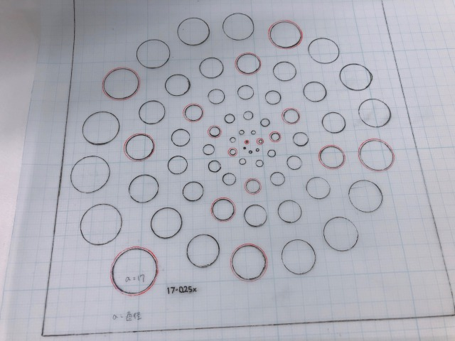

今までの授業の中から完成品を作る授業
※写真を取り忘れたためイメージ
今回作った作品は前期からやっていたレーザーカッターの限界がどこまでなのかを知るために 実験的なものを誰が見てもわかりやすくしたものを作りました。
穴は直径17mmから0.25mmずつ小さくしていき最少は1mmにしました。 この実験からわかったことは、1mmでもあけることができるが、レーザーの熱により切り取った内円が ひっついてしまうが簡単に取れた。
今回完成品を作るということは成功したし、実験からレーザーカッターの限界を知ることができたので 自分の中でも良いものができたと思っているし、ほかの実験もできればと思った。